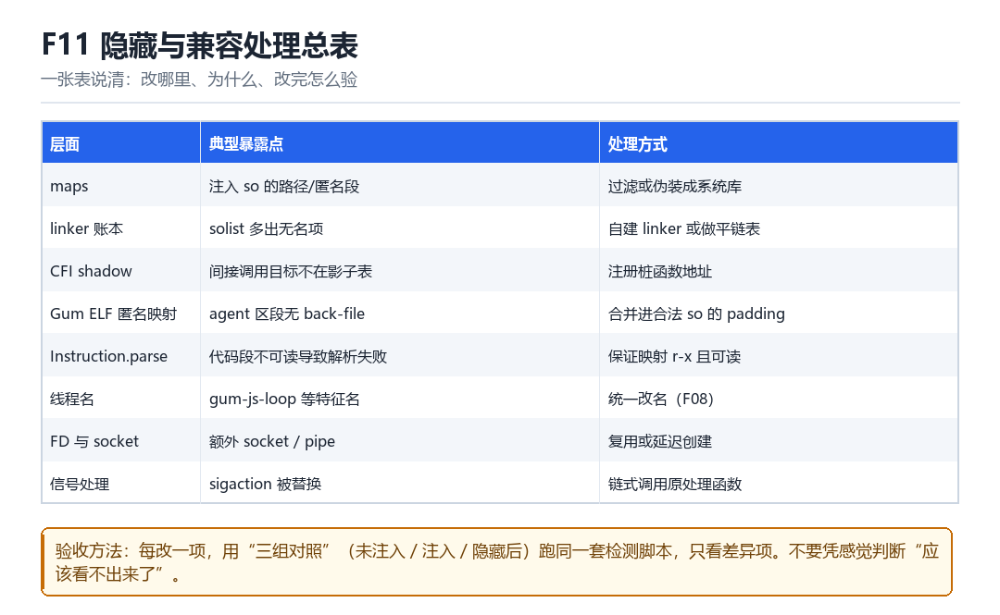

当前工程隐藏与兼容处理总表
maps 过滤、linker 账本、CFI shadow、Gum ELF 匿名映射、Instruction.parse 可读性
这一章是全书的“检查表”：改哪里、为什么、改完怎么验。

11.1 八项总表
| 层面 | 暴露点 | 处理方式 |
|---|---|---|
| maps | 注入 so 的路径 / 匿名段 | 过滤或伪装成系统库 |
| linker 账本 | solist 多出无名项 | 自建 linker 或做平链表 |
| CFI shadow | 间接调用目标不在影子表 | 注册桩函数地址 |
| Gum ELF 匿名映射 | agent 区段无 back-file | 合并进合法 so 的 padding |
| Instruction.parse | 代码段不可读导致解析失败 | 保证映射 r-x 且可读 |
| 线程名 | gum-js-loop 等特征 | 统一改名（F08） |
| FD 与 socket | 额外 socket / pipe | 复用或延迟创建 |
| 信号处理 | sigaction 被替换 | 链式调用原处理函数 |
11.2 验收方法：三组对照
- 未注入组：干净设备，采基线（线程数、FD 数、maps 条目、ClassLoader 数）。
- 注入组：加载 agent，跑同一套检测脚本，记录所有报警项。
- 隐藏后组：应用隐藏改动，再跑一遍，只看“还剩哪几项”。
三组数据放在一张表里，差异项就是你的“工作清单”。改完一项划掉一项，不要凭感觉判断“应该看不出来了”。
11.3 兼容性的现实
不同 Android 版本、不同厂商 ROM、不同 ART 实现，会让同一份代码表现不同。所以“隐藏”不是一个状态，而是一条持续维护的曲线——每次系统升级都可能带来新的暴露点。
11.4 本章自测
- 八个层面里，哪三项最难处理？为什么？
- 三组对照法的价值是什么？
- 为什么 Instruction.parse 会失败？怎么修？
- 如果要交付给别人，你会附上哪三份材料？
11.5 深入：为什么 `Instruction.parse` 会失败
它需要读目标地址的内存。如果该页只有执行权限（r-x 中 x 是执行，r 是读，一般可读），通常没问题；但如果某段被映射成 --x（只执行不读），读取就会失败。部分加固方案正是利用了这一点。
| 映射权限 | 能否 read | 能否 execute | Instruction.parse |
|---|---|---|---|
| r-x | 能 | 能 | 成功 |
| --x | 不能 | 能 | 失败 |
| rwx | 能 | 能 | 成功（但可疑） |
11.6 实战：一张自查表怎么用
- 把八项做成检查脚本，每次构建后自动跑。
- 记录“改前 / 改后”的差异，形成趋势。
- 新增一个隐藏点时，同步新增一项检查。
- 版本升级后，先跑一遍，看哪几项退化。
11.7 原理推演：为什么“隐藏”是收敛而不是清零
因为每一次隐藏都会引入新的不自然：改了 maps，dev/inode 可能对不上；改了线程名，线程数还是多的；做了自建 linker，映射的权限组合又可能不常见。所以隐藏是一个“把异常摊平到正常范围”的过程。
| 改动 | 消除了什么 | 又引入了什么 |
|---|---|---|
| maps 过滤 | 可疑路径 | dev/inode 不一致 |
| 线程改名 | 可疑名字 | 线程数仍异常 |
| 自建 linker | solist 记录 | 权限组合异常 |
理解这一点，“完美隐藏”就不再是目标——目标是“没有单项特别突出”。
11.8 数据细节：一份验收表长什么样
| 项 | 干净 | 注入 | 隐藏后 | 结论 |
|---|---|---|---|---|
| maps 条目 | 120 | 129 | 121 | 接近 |
| 线程数 | 18 | 25 | 24 | 仍偏高 |
| FD 数 | 42 | 51 | 44 | 接近 |
| 匿名可执行段 | 3 | 6 | 3 | 已处理 |
看最后一列：线程数仍偏高，说明“线程清理”这一项还没做完。这就是“用数据驱动隐藏”的样子。
现场：从十七条到两条，最后两条为什么难
验收会上你把改完的包一跑，检测脚本的报警从 17 条降到 2 条。有人问“能不能降到 0”，你把三组基线摊到桌上：maps 条目已经贴回基线，匿名可执行段归零，sigaction 也恢复原样，可线程数还稳稳地高 1，FD 峰值差 2。这两条不是没做完，是不该做完。
隐藏从来不是清零，是收敛。每改一处都会引入新的不自然：改了 maps，dev/inode 可能对不上；改了线程名，线程数还是多的；做了自建 linker，映射的权限组合又变得少见。于是验收的目标不是“零差异”，而是“没有任何单项特别突出”——而这件事只能靠数据判，不能靠感觉判。
把一次验收拆成七拍
- 你 → 对干净设备 → 采基线：线程数、FD 数、maps 条目、ClassLoader 数、匿名 r-xp 段、sigaction 指针 → 结果：一份带机型 / 系统版本 / App 版本号的 JSON，没有这三个标签的基线等于废纸。
- 你 → 对同一台设备 → 注入 agent 并跑同一套检测脚本 → 结果：17 条报警，每条都精确对应一个可观测面，成为待办清单的初始行。
- 你 → 对 maps → 过滤路径、把 agent 映射并进合法 so 的 padding → 结果：可疑路径消失，但 dev/inode 与伪装路径对不上，反而新增一条报警。
- 你 → 对 linker 账本 → 用自建 mapper 或把 solist 节点平掉 → 结果：账本干净了，代价是权限组合变得少见，成为下一轮要摊平的对象。
- 你 → 对线程 → 改名、洗 start_routine、回收多余线程 → 结果：名字与入口都对上了，线程数仍比基线高 1；这一项决定要不要保留一条常驻线程。
- 你 → 对信号与 FD → 链式调用原 handler、复用或延迟创建 socket → 结果：sigaction 与 FD 两项报警归零，但延迟创建会让首次 send 的时序与基线不同。
- 你 → 对隐藏后版本 → 再跑一遍同一脚本，把剩余项写成已知限制清单 → 结果：交付物里明明白白写着“还剩 2 条、为什么留着、什么条件下会变”，而不是一句“应该看不出来了”。
复现：一份能重复跑的验收脚本
把三组采样写成脚本，比手敲命令可靠得多：字段固定、时机固定、输出可直接 diff。下面这段 host 侧脚本每个字段都单独取样，跑完把三份 JSON 存起来，差异项就是下一轮的工作清单。
# 速查四条（占位符换成实际 PID）
adb shell 'cat /proc/$(pidof com.example.app)/maps' | wc -l
adb shell 'ls /proc/$(pidof com.example.app)/task' | wc -l
adb shell 'ls /proc/$(pidof com.example.app)/fd' | wc -l
adb shell 'cat /proc/$(pidof com.example.app)/maps' | grep 'r-xp' | grep -v '/' | wc -l
# sample.py —— 三组各跑一次，结果存成 base / injected / hidden
import json, subprocess
def sample(pkg):
pid = subprocess.check_output(['adb', 'shell', 'pidof', pkg]).decode().strip()
def n(fmt):
cmd = fmt % pid
out = subprocess.check_output(['adb', 'shell', cmd]).decode().strip()
return int(out.splitlines()[-1])
return {
'maps': n('cat /proc/%s/maps | wc -l'),
'threads': n('ls /proc/%s/task | wc -l'),
'fds': n('ls /proc/%s/fd | wc -l'),
'anon_rx': n('cat /proc/%s/maps | grep r-xp | grep -v / | wc -l'),
}
base = sample('com.example.app')
print(json.dumps(base, ensure_ascii=False))算成功：三组的字段、采样时机、机型 / 系统 / App 版本完全一致；hidden 与 base 的差值逐项缩小，每条剩余差值都在已知限制清单里有对应说明；连续跑 3 轮，波动不超过基线噪声。算失败：base 那一组自己就漂移——一次在冷启动采、一次在 idle 采，差值全成了启动阶段的噪声；或者跨机型、跨系统版本比数，得到一堆无法解释的波动，最后把系统差异误判成“隐藏没做好”。还有一种典型失败：只看报警总数从 17 变 2，不看哪一项变差了——隐藏里最忌讳的就是用总分掩盖单项恶化。
| 观测项 | 未注入 | 注入 | 隐藏后 | 剩余差值 | 归属 |
|---|---|---|---|---|---|
| maps 条目 | 120 | 129 | 121 | +1 | F09 |
| 匿名 r-xp 段 | 3 | 6 | 3 | 0 | F09 |
| 线程数 | 18 | 25 | 19 | +1 | F08 / F10 |
| FD 峰值 | 42 | 51 | 44 | +2 | F04 / F06 |
| ClassLoader 数 | 4 | 5 | 4 | 0 | F03 |
| sigaction 异常 | 0 | 3 | 0 | 0 | F06 |
| 报警总数 | 0 | 17 | 2 | 留 2 条 | 全章 |
这张验收表会一路带到 LSPosed 部 L09 侧信道与结构差分检测 与 L10 验证矩阵与工程交付：L09 讲清为什么“看结构比看特征”更难对付，L10 把“验证脚本 + 基线数据 + 已知限制清单”定为交付标准；KPM 部 M02 内核观察面与基础检测处理 则是同一个验收的 EL1 版本——你在用户态过滤掉的 maps，内核从 VMA 链表里仍能原样读出来，这提醒我们：所谓“隐藏后”，永远要写清楚是相对哪一层观察者而言。